| 日付 | 2013年12月29日（日） - 2013年12月31日（火） |
|---|---|
| メンバー | 家族（妻、長女・2歳、長男・0歳） |
| アクセス | 車、船 |
2日目
本日は静岡から西進し、渥美半島からフェリーに乗って伊勢に向かう予定だ。
遠州灘を望みながら、国道1号浜名バイパスを走っていく。
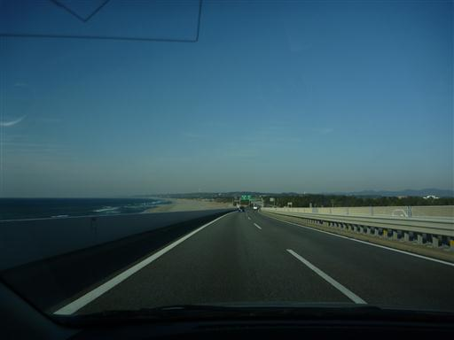
渥美半島をひた走り伊良湖岬に向かう。
途中、岬近くの日出の石門に立ち寄ることにする。
駐車場からは延々と続く砂浜を望むことができる。
片浜十三里と呼ばれ、浜名湖まで約52㎞の砂浜が続く。
美しい砂浜だが、危険な波が打ち寄せるため海水浴場はないらしい。
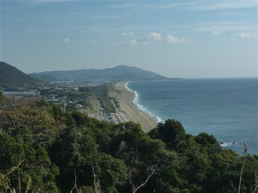
海岸に向かって坂道を下って行く。
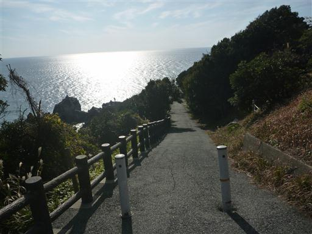
両側は木が鬱蒼と茂っている。
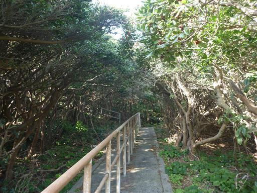
砂浜まで下りてくる。目の前の巨大な岩が日出の石門だ。
波によって削られた穴が二つ空いている。
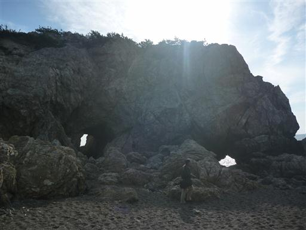
穴に近づいてみる。季節によってはここから日の出を望むことができるようだ。
穴の中の水たまりは海水面より高い。満潮時は波がここまで来るのだろうか？
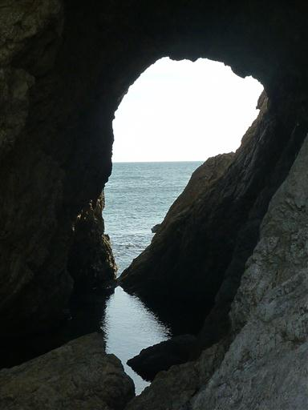
こちらは小さいほうの穴。波が打ち寄せてくる。
岩が濡れているので滑りやすくて少し怖い。
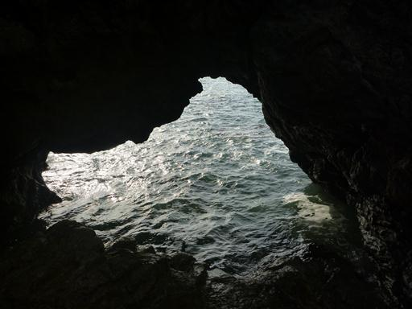
目の前には巨大な大岩がそそり立っている。
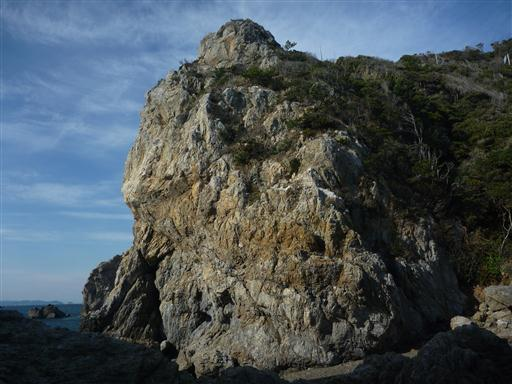
来た道を戻って大岩の上に立ってみる。ここからは素晴らしい展望が広がる。
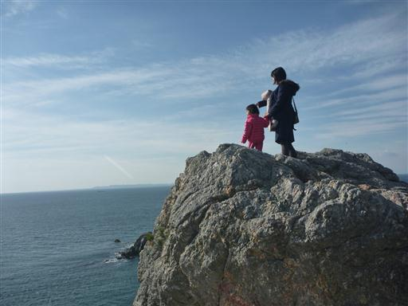
足元には先ほど眺めた日出の石門。
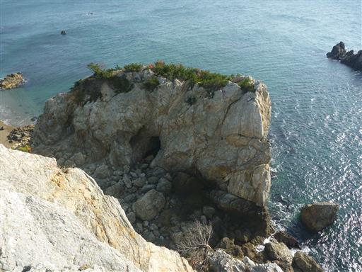
目の前に見えるのは神島。いくつかの文学作品の舞台にもなった小さな島だ。
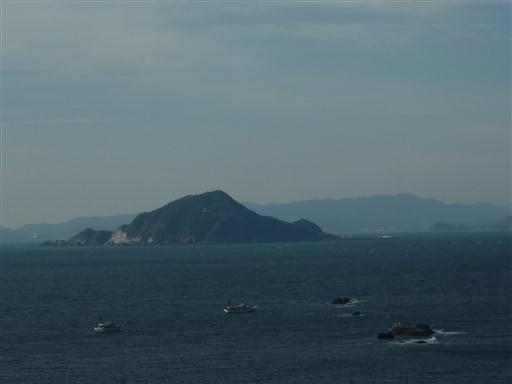
海の中には格好いい形の岩が突き立っている。
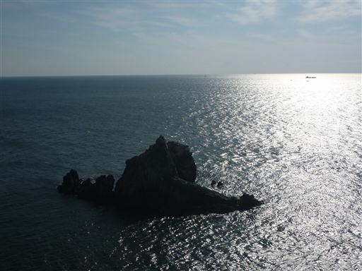
こちらにもぽっかりと大きな穴が空いているのが見える。
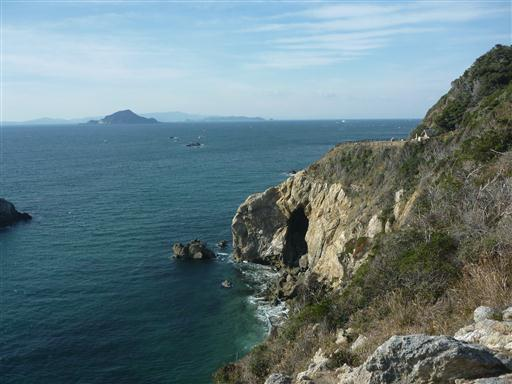
伊良湖岬まで車を走らせる。フェリー乗り場手前の駐車場に車を停めて恋路ヶ浜を見学する。
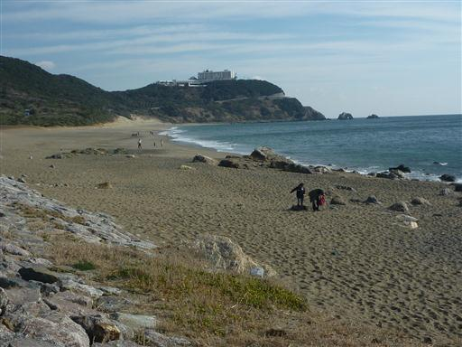
海岸線に沿って遊歩道を歩いてみる。
風が強いため白波が立っている。
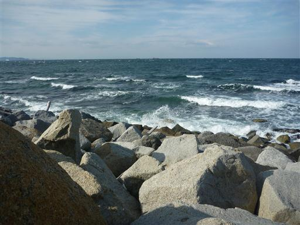
この辺りが伊良湖岬の先端だろう。右側と左側から波が押し寄せている。
正面には神島が見えている。
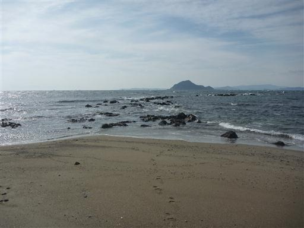
伊良湖岬灯台。白亜の美しい灯台だ。
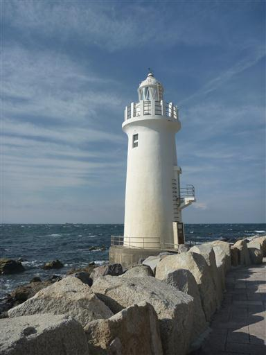
伊良湖岬近辺を観光した後、フェリー乗り場に向かう。
11:50の便に乗ろうと思い11:30ごろに着いたのだが、すでに満車。
次発の13:00も満車で、14:10の便になってしまった。
本日は時刻表が繁忙期のものでなかったため、空いていると思っていたが、これは大誤算だ。
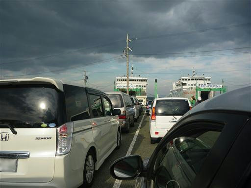
仕方がないので、旅客ターミナルを兼ねている道の駅伊良湖クリスタルポルトで休憩する。
施設内は特に見るべきものもなく、車は列に並べてあるため移動させることもできずで、
2時間半ほど時間を持て余す。
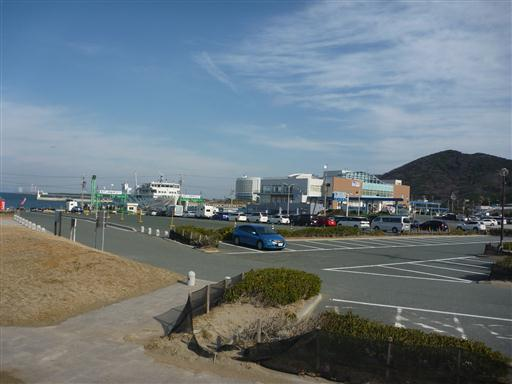
展望デッキからフェリーを眺める。
昼食のパンを食べたり、先ほどの灯台を再度見に行ったりしながら時間をつぶす。
こんなことになるのであれば、寄り道せずにまっすぐフェリー乗り場に来るべきであった。
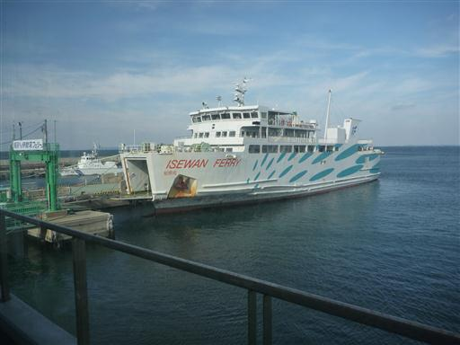
ようやく出航の時間になり、車をフェリーに入れる。
ラインを見る限り4列駐車のはずなのだが、ぎゅうぎゅうに詰めて5列並ばせている。
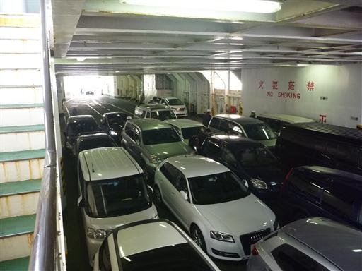
出航。防波堤に激しく波が打ち付けている。
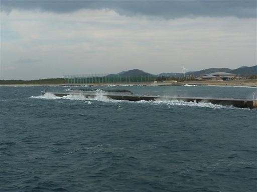
上部の甲板に出るのが好きなのだが、なんと別料金が必要。
展望はあきらめ、ボックス席を確保する。
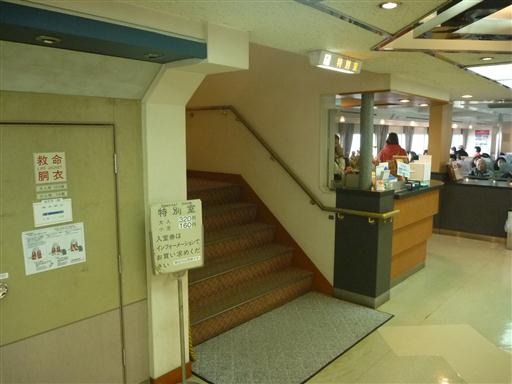
船は凄まじい水しぶきを上げながら進んでいく。甲板まで水が飛んでくる。
船は55分で鳥羽港に到着する。
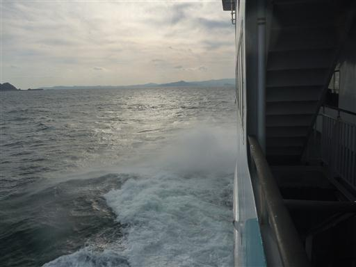
鳥羽港に着いたのは15時過ぎ。大急ぎで伊勢神宮に向かう。
駐車場に着いたのは16時で、もう陽は傾き始めている。
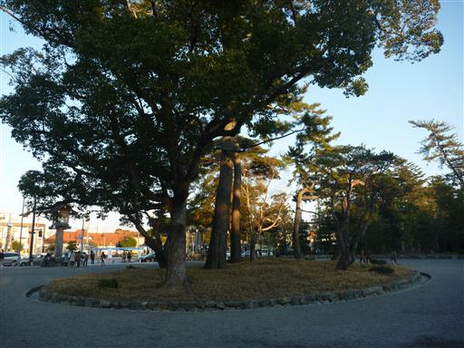
伊勢神宮・外宮のお参りをする。ここの橋は左側通行だ。
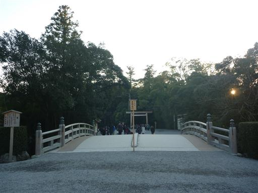
手洗い場。時間が遅いからか、比較的人の数は少ない。
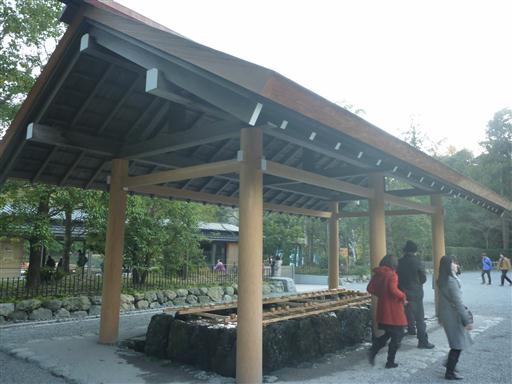
真新しい鳥居を潜る。
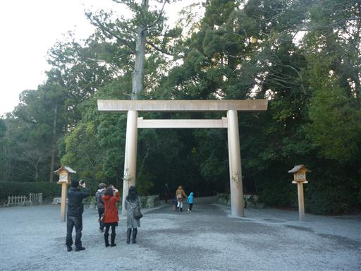
境内は鬱蒼とした森におおわれている。
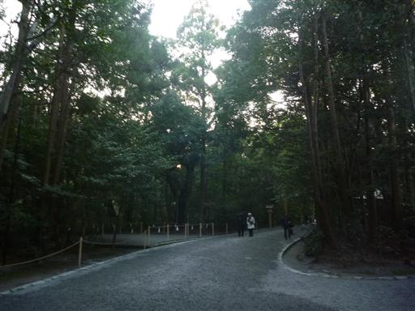
正宮に到着。伊勢神宮は20年に一度の式年遷宮が行われたばかりだ。
手前が古い正宮、奥が新しい正宮だ。
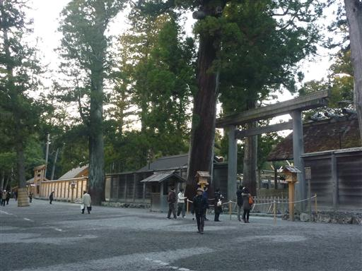
古い方の建物は封鎖されている。
20年前に建てられたはずなのだが、もっと古い建物のように見える。
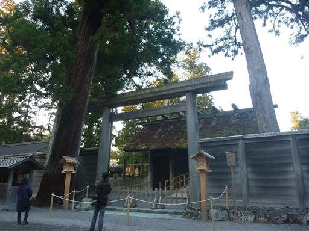
こちらが今年新たに建てられた正宮。内部は撮影禁止だ。
一般参拝者は手前の建物のところまでしか入れない。
それより内部に入るには正式参拝が必要だ。
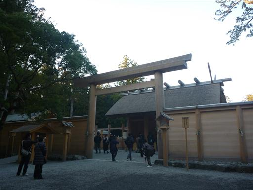
境内を流れる小さな川に、一枚石の橋が架かっている。
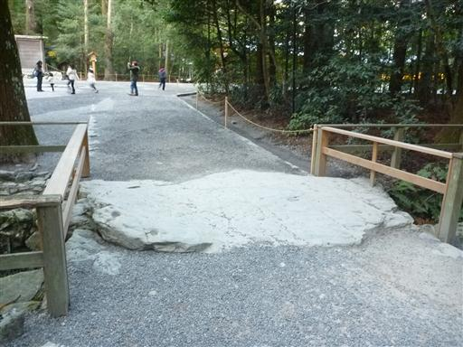
土宮、風宮、多賀宮を順にめぐる。
多賀宮は新しくなっていたが、土宮、風宮は古い建物のままだ。
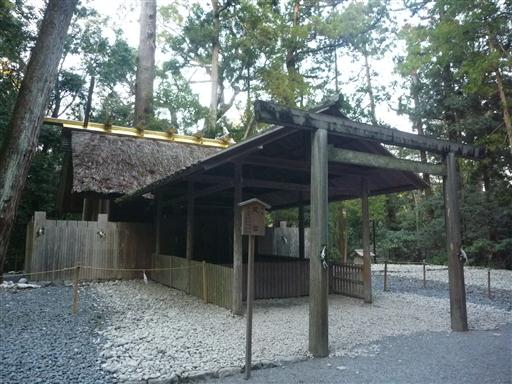
30分ほどで外宮の参拝を済ませ、駐車場に向かう。
だいぶ陽が落ちてきた。
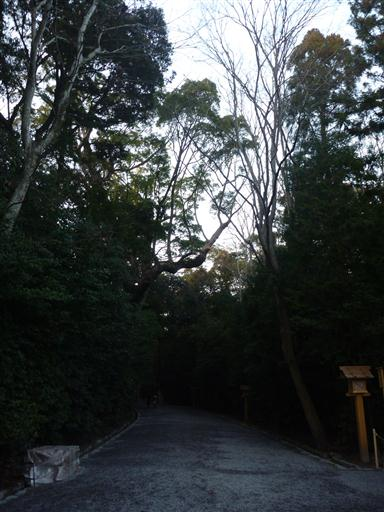
本日の宿は「志摩和荘」。伊勢近辺では宿が取れなかったため、志摩まで南下する。
宿泊客は2組。それ以外の部屋は閉めているようだった。
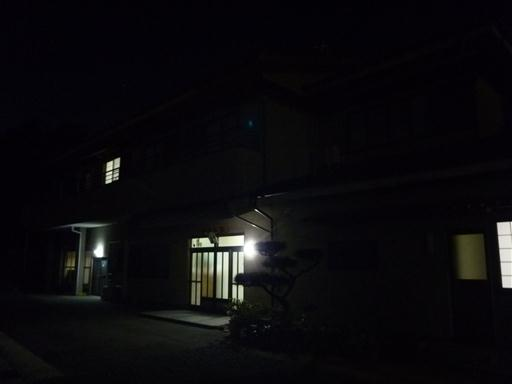